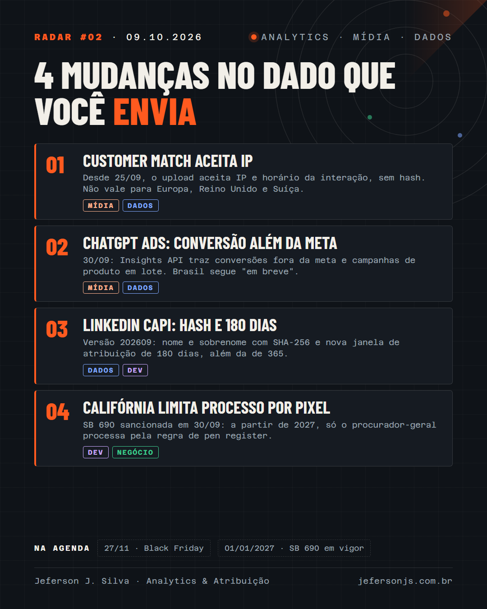

IP no Customer Match do Google Ads, conversões fora da meta no ChatGPT Ads, hash e janela de 180 dias na CAPI do LinkedIn e a lei da Califórnia que limita processos por pixel.

Três mudanças no dado que você manda para as plataformas e uma no risco jurídico do pixel.
Desde 25/09, a ajuda do Google Ads lista duas colunas novas no upload do Customer Match: IP do usuário e horário da interação, enviados sem hash. A correspondência por IP não vale para usuários no Espaço Econômico Europeu, no Reino Unido e na Suíça. Sem o horário, o Google usa o último usuário conhecido daquele IP.
Em 30/09, a OpenAI avisou os anunciantes que a Insights API passa a trazer conversões atribuídas fora da meta da campanha, sem mudar a otimização. Também liberou a criação de campanhas de produto em lote por planilha. Brasil e México seguem como "em breve" na documentação da AppsFlyer.
Na versão 202609 da API de marketing, a Conversions API do LinkedIn passou a aceitar nome e sobrenome com hash SHA-256 e ganhou uma janela de atribuição de 180 dias, além da de 365, para compra, lead e outros tipos de conversão.
A SB 690, sancionada em 30/09, deixa só o procurador-geral da Califórnia processar com base na regra de "pen register" da CIPA a partir de 01/01/2027. Essa regra vinha sendo usada em perto de 4 mil ações contra pixels, scripts de analytics e tags. Processos por grampo (seções 631 e 632) continuam possíveis.
Você subiria IP no Customer Match com a LGPD de hoje?
30 minutos, de graça. Entro nas suas plataformas e mostro os três problemas mais críticos de mensuração.
Quero meu diagnóstico grátis →